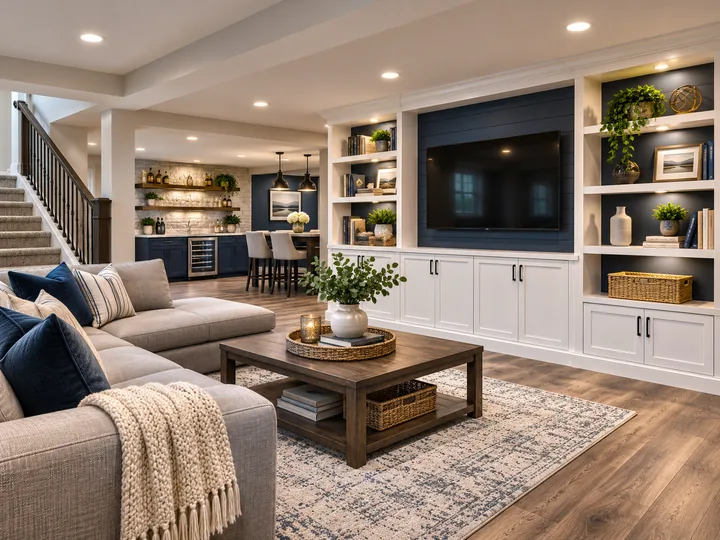

Kitchen Remodeling
Custom cabinetry, natural stone and layouts planned around how your family actually cooks and gathers.
Explore ServiceBased in Olney, Maryland. Repairs and remodeling within about 40 miles, in Maryland, DC and Virginia.
Center-hall colonials, Tudors, foursquares and Craftsman bungalows from the 1900s to the 1940s, on compact lots with plaster walls, radiators and a kitchen that was never meant to be the center of the house. Blue Hammer Remodeling designs and builds kitchens, baths and lower levels across Chevy Chase Village, the Town of Chevy Chase, Sections 3 and 5, Martin’s Additions, Rollingwood and Somerset.

Chevy Chase was one of the region’s first streetcar suburbs, and it shows in the best way: deep front porches, real plaster, heart pine and oak floors, leaded glass and generous moldings. It also shows in the kitchens, which were built for staff, not family; in the single original bath per floor; and in basements with seven-foot ceilings. The craft of remodeling here is making the new work look like it was always meant to be there.
Painted inset cabinetry, honed marble or soapstone, unlacquered brass, a bridge faucet under the original window, and the breakfast room or butler’s pantry folded in so the room finally has space to cook and gather.
Small original baths rebuilt with hex and subway tile, a proper alcove tub or a glass shower, in-wall storage stolen from a closet, and a second bath carved from a hall closet or a bedroom corner.
Lowering a basement floor or underpinning to gain ceiling height, then adding a family room, laundry, full bath and dry storage, with moisture managed before finishes go in.
Custom cabinetry, natural stone and layouts planned around how your family actually cooks and gathers.
Explore Service
Primary suites, hall baths and powder rooms with curbless showers, heated floors and quiet, durable detailing.
Explore Service
Lower levels, built-ins and whole-interior refreshes that make every square foot feel intentional.
Explore Service| Project | Planning range |
|---|---|
| Design-led kitchen in a pre-war colonial, custom inset cabinetry, marble or soapstone, reworked openings, new electrical | $150,000 – $280,000+ |
| Kitchen and butler’s pantry reorganized within the existing footprint, semi-custom cabinetry, stone | $95,000 – $175,000 |
| Period hall bath rebuilt down to the studs | $40,000 – $70,000 |
| Primary bath created from a bedroom corner or sleeping porch | $80,000 – $160,000+ |
| Lower level with floor lowering or underpinning, bath and family room | $120,000 – $260,000+ |
Planning ranges for typical Chevy Chase projects, not quotes. Older-home conditions, municipal requirements and the level of millwork detail are the main variables; they are documented at the walkthrough and priced in the written scope.
Yes. We profile existing casings and baseboards, source or mill matching trim, and specify period-appropriate hardware and lighting so new rooms read as part of the original house.
For most projects, yes. Each Chevy Chase municipality has its own process, and some require neighbor notification. We prepare both applications and build the review time into the schedule.
Often. Lowering the slab or underpinning the foundation can turn a seven-foot basement into usable living space. It is structural work with a structural permit, and we assess feasibility and cost before design begins.
About 30 minutes from our base in Olney, down Connecticut Avenue or Georgia Avenue. Our crew is on site daily for the length of the project.
Bring drawings, a list of what isn’t working or a few saved photos. We read every request and follow up if the project is in our area.
Prefer to speak with us?